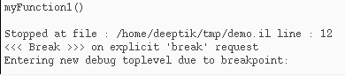
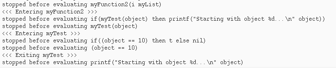

Using Breakpoints to Find and Correct a Functional Error
To find the next error, execute myFunction1 that you modified to correct the error.
-
In the CIW, type
myFunction1
The following output displays in the CIW:Starting with object 10... Ending with object 1000... (1 2 3 4 5 6 7 8 9 10 ... 996 997 998 999 )
The starting object is 10 instead of 1. This is a functional error.
Using Breakpoints to Identify the Source of the Error
Let us use breakpoints to identify the source of the error.
-
In the source code pane, click the following line:
myList = myFunction2(i)
Choose Debug – Set/Modify Conditional Breakpoint. The Set Conditional Breakpoint (Line) dialog box displays. -
In the Break on condition field, type
i==10.
As a result, the program will pause when the value ofiequals to 10. - Click OK.
Executing a Function Through Single-stepping
To execute myFunction1 and single-step from the conditional breakpoint you have set (i==10), do the following:
-
In the CIW, type
myFunction1()
Wheniequals 10, a breakpoint message displays in the CIW.
 -
In SKILL IDE, click
or choose Debug – Step five times.
The following messages display in the CIW:
Single-stepping through the program shows thatmyFunction2callsmyTestwith a value of 10.myTestreturnstif the value passed to it is equal to 10. However,myTestshould returntif the value is equal to 1. -
In SKILL IDE, click
 or choose Debug – Stop All Debugging.
or choose Debug – Stop All Debugging.
Correcting the Erroneous File
Make the following correction in myTest:
-
In the source code pane, change the erroneous line in
myTestas follows:
if(object == 10
if(object == 1
-
Click
to load the edited file.
The following messages display in the CIW:function myFunction1 redefined function myFunction2 redefined function myTest redefined
Verifying the Fixed Problem
To verify the problem has been fixed, do the following:
-
In the CIW, type
myFunction1()
The following output displays in the CIW:Starting with object 1... Ending with object 1000... (1 2 3 4 5 6 7 8 9 10 ... 996 997 998 999 )
The starting object is 1. You now have a working program.
Related Topics
SKILL IDE Debugger Example File
Loading and Running the Example File
Return to top